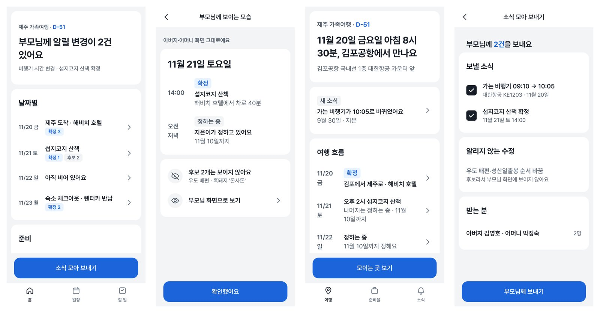

VIBE MAFIA CLUB 이너서클 · hyper-design (플러그인 이름 k-style-ui-ux)
기획서 한 장을 넣으면,
15분쯤이면 앱 화면이 전부 나옵니다
아래 화면은 사람이 한 장도 고치지 않았습니다. PRD를 넣고 하네스의 질문에 답만 했고(v18은 가상 사용자가 답함), 화면·색·컴포넌트·문구를 하네스가 정했습니다.
① 비슷한 앱의 스토어 화면·리뷰로 관례 조사② 무엇을 따르고 벗어날지 결정③ 화면 전체 생성④ 기계 검사 45개 항목
v18 · 같은 하네스로 PRD 4개를 동시에 처음부터 (2026-10-07)
하네스톤 개인전 제출작 · v7 (2026-09-30)

부모님과 함께 떠나는 여행 계획 — greatSumini
자녀는 마음껏 고치고, 부모님은 확정된 것만 받아봅니다
14화면
9.0분실행
2회사람 개입
사람이 한 일: PRD 넣기 + 무드 고르기(한 글자)